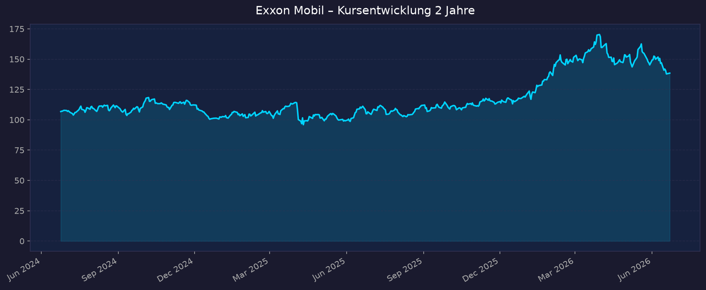
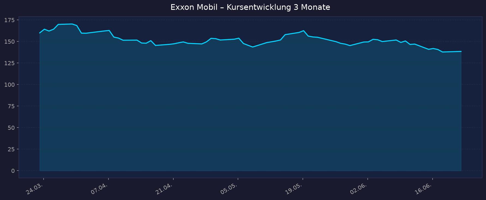

Günstig bewertet (Forward-KGV ~13), MTUM-Top-10-Wert, Wachstum aus Permian & Guyana, hohe Dividende plus aggressive Aktienrückkäufe. NYSE (USD), GICS-Sektor Energy.
📈 1. Kursentwicklung
Aktueller Kurs: 138,47 USD | Veränderung heute: +0,48 %
Chart – 2 Jahre

Chart – 3 Monate

Interaktiv: TradingView NYSE:XOM
| Zeitraum | Kurs Start | Kurs Ende | Veränderung |
|---|---|---|---|
| 2 Jahre | 106,80 USD | 138,47 USD | +29,7 % |
| 3 Monate | 160,04 USD | 138,47 USD | −13,5 % |
| 52-Wochen-Hoch | — | 176,41 USD | — |
| 52-Wochen-Tief | — | 105,53 USD | — |
Einordnung: Auf 2-Jahres-Sicht solide im Plus, jedoch klare Korrektur über die letzten 3 Monate (von ~160 auf ~138 USD), getrieben durch den Ölpreisverfall (Brent fiel auf ~77 USD wegen geopolitischer Entspannung Iran/Hormus). Der Kurs notiert deutlich unter dem 52-Wochen-Hoch (176,41) und mit komfortablem Abstand zum Tief (105,53). Analysten-Konsens: "Buy", Ø-Kursziel 169,91 USD (+22,7 %).
💹 2. KGV-Entwicklung (Kurs-Gewinn-Verhältnis)
Aktuelles KGV (trailing): 23,3 | Forward-KGV: ~11–13
| Zeitraum | KGV | Einordnung |
|---|---|---|
| Aktuell (trailing) | 23,3 | Erhöht ggü. Historie – gedrückte Ist-Gewinne |
| Forward (erwartet) | ~11–13 | Günstig – stützt die These "KGV ~14" |
| Jahresende 2025 | 21,8 | Anstieg durch steigenden Kurs + fallende EPS |
| Jahresende 2024 | 14,2 | Nahe historischem Schnitt |
| Jahresende 2023 | 11,5 | Günstig |
| Jahresende 2022 | 8,0 | Sehr günstig (Ölpreis-Hoch) |
Bewertung: Das trailing-KGV von 23,3 wirkt teuer, ist aber durch zyklisch gedrückte 2025er-Gewinne (schwächere Rohölpreise) verzerrt. Das Forward-KGV von ~11–13 ist der relevantere Maßstab und bestätigt die These einer günstigen Bewertung. 3-Jahres-Schnitt ~15,2, 5-Jahres-Schnitt ~13,3. Die These "KGV ~14" trifft auf Forward-Basis zu, nicht auf trailing-Basis.
💰 3. Sales Multiple (Kurs-Umsatz-Verhältnis / P/S)
Aktuelles P/S-Verhältnis: 1,76
| Zeitraum | P/S Ratio | Einordnung |
|---|---|---|
| Aktuell | 1,76 | Über mehrjährigem Schnitt |
| Jahresende 2025 | 1,94 | Höchststand der Periode |
| Jahresende 2024 | 1,41 | — |
| Jahresende 2023 | ~1,2 | Tief der Periode |
Trend: Steigend von ~1,2 (2023) auf ~1,9 (2025), aktuell durch die Kurskorrektur leicht auf 1,76 zurück. Für einen integrierten Öl- und Gaskonzern ist ein P/S um 1,8 im oberen Bereich der eigenen Historie, aber kein Alarmsignal – kapitalintensive Energiewerte handeln strukturell mit niedrigen P/S-Multiples.
📊 4. Handelsvolumen (Trading Volume)
| Zeitraum | Ø Tagesvolumen | Auffälligkeiten |
|---|---|---|
| 10-Tage-Durchschnitt | ~20,5 Mio. Aktien | Leicht erhöht (Ölpreis-Volatilität) |
| 3-Monats-Durchschnitt | ~15,8–19,4 Mio. Aktien | Normalbereich |
| Volumen-Peak (2J) | nicht verfügbar | nicht eindeutig isolierbar |
Volumentrend: Das aktuelle Volumen liegt über dem 3-Monats-Schnitt, was zur Kurskorrektur und der erhöhten Nachrichtenlage (Ölpreisverfall, Woodside-Spekulation, Texas-Redomizil) passt. Hohe Liquidität – XOM ist ein Mega-Cap-Standardwert ohne Liquiditätsrisiko.
🏦 5. Insider Trades (letzte 2 Jahre)
| Datum | Name | Funktion | Kauf/Verkauf | Anzahl Aktien | Wert (USD) |
|---|---|---|---|---|---|
| 2026 | Maria S. Dreyfus | Director | Kauf | ~14.500 | ~2.000.386 |
| letzte 90 Tage | (1 Executive) | — | Verkauf | — | ~1.180.589 (3 Verkäufe) |
| laufend | diverse | — | Stock Awards | — | 12 Vergütungs-Zuteilungen (kein Cash) |
3-Monats-Überblick: Netto-Verkäufe von rund 507.000 USD über 90 Tage – sehr gering relativ zur Marktkapitalisierung (~574 Mrd.), faktisch neutral. Bemerkenswert ist der Offenmarkt-Kauf von Director Maria S. Dreyfus über ~2,0 Mio. USD (echtes Kaufsignal, kein Award). 2-Jahres-Überblick: Insgesamt unauffällig. Die Aktivität besteht überwiegend aus regulären Stock Awards (Vergütung). Keine massiven, koordinierten Verkäufe – kein Warnsignal.
Quelle: MarketBeat / GuruFocus (SEC Form 4). OpenInsider direkt nicht abrufbar.
🩳 6. Short-Positionen
Aktuelle Short Quote: 1,02 % des Streubesitzes (Float) — Stand 29.05.2026
| Zeitraum | Short Interest | Veränderung |
|---|---|---|
| Aktuell (Mai 2026) | 1,02 % / 42,1 Mio. Aktien | +2,97 % ggü. Vormonat |
| Days to Cover | 2,4 Tage | — |
| Historisch (2J) | durchgängig niedrig (~1 %) | nicht verfügbar (Detailverlauf) |
Einschätzung: Sehr niedrige Short-Quote (1,02 %) – typisch für einen defensiven Mega-Cap. Kein Short-Squeeze-Kandidat, keine erkennbare Wette gegen die Aktie. Leichter Anstieg zuletzt, aber auf irrelevant niedrigem Niveau. Die Days-to-Cover von 2,4 sind unkritisch.
🗞️ 7. Aktuelle Nachrichten
| Datum | Quelle | Nachricht | Relevanz |
|---|---|---|---|
| 22.06.2026 | Investing/GuruFocus | Redomizil von New Jersey nach Texas zum 1. Juli 2026; neue Holding (Exxon Mobil Holdings), Ticker bleibt XOM | Mittel |
| 12.06.2026 | GuruFocus | XOM prüft Übernahme von Woodside Energy (WDS) – Ausbau LNG/Asien | Hoch |
| Juni 2026 | MarketBeat | Bank of America hebt XOM auf "Buy" an, Fokus Wachstumspotenzial | Hoch |
| Q2 2026 | XOM IR | Quartalsdividende 1,03 USD/Aktie (zahlbar 10.06.2026) bestätigt | Mittel |
| 2026 | XOM IR | 20-Mrd.-USD-Aktienrückkauf für das Jahr läuft weiter | Hoch |
| Juni 2026 | TradersUnion | Tagesverlust −4,4 %, Support bei ~146 USD im Fokus (Ölpreisdruck) | Mittel |
| Dez. 2025 | XOM Corporate | 2030-Plan angehoben: Ziel 5,4 Mio. boe/d, getrieben Permian + Guyana | Hoch |
| Nov. 2025 | XOM Guyana | 900.000 bbl/Tag in Guyana (Stabroek) erreicht | Hoch |
| Apr. 2026 | Tickeron/TIKR | Q1 2026: bereinigter EPS-Beat, Rekord-Raffinerieleistung, Qatar-Schäden | Hoch |
Sentiment: Überwiegend positiv bis neutral. Operativ starke Story (Guyana, Permian, 2030-Plan, Buybacks, Analysten-Upgrade), kurzfristig belastet durch den Ölpreisverfall und die damit verbundene Kurskorrektur. Der Woodside-Vorstoß zeigt strategischen Wachstumswillen im LNG-Segment.
📋 8. Letzte 3 Quartalsberichte
Q1 2026
| Kennzahl | Ist | Erwartung | Abweichung |
|---|---|---|---|
| Umsatz (Revenue) | 85,14 Mrd. USD | 81,24 Mrd. USD | +4,8 % |
| EPS (bereinigt) | 1,16 USD | ~1,02 USD | +13,7 % (Beat) |
| EPS (GAAP) | 1,00 USD | — | — |
| Nettogewinn (GAAP) | 4,2 Mrd. USD | — | von 7,7 Mrd. Q1'25 |
| Nettogewinn (bereinigt) | 4,9 Mrd. USD | — | — |
Guidance: Upstream-Wachstum +8 % j/j durch Permian & Guyana; Rekord-Raffinerieleistung trotz Nahost-/Qatar-Störungen. Bestätigung 2030-Ziel 5,4 Mio. boe/d. Kursreaktion: nicht eindeutig verfügbar (bereinigter Beat, GAAP-Rückgang preisbedingt – gemischt aufgenommen).
Q4 2025
| Kennzahl | Ist | Erwartung | Abweichung |
|---|---|---|---|
| EPS (bereinigt) | 1,71 USD | — | nicht verfügbar |
| EPS (GAAP) | 1,53 USD | — | — |
| Nettogewinn (GAAP) | 6,5 Mrd. USD | — | Gewinn (Rückgang ggü. Q3) |
| Cashflow operativ | 12,7 Mrd. USD | — | — |
| Free Cashflow | 5,6 Mrd. USD | — | — |
Guidance: Belastet durch schwächere Rohöl-Realisierungen und Wertminderungen (identified items), teilweise ausgeglichen durch Volumenwachstum Guyana/Permian. Kursreaktion: nicht verfügbar.
Q3 2025
| Kennzahl | Ist | Erwartung | Abweichung |
|---|---|---|---|
| Nettogewinn (GAAP) | 7,5 Mrd. USD | — | starkes Quartal |
| Cashflow operativ | 14,8 Mrd. USD | — | — |
| EPS / Marge | nicht verfügbar (Detail) | — | — |
| Free Cashflow | nicht verfügbar (Detail) | — | — |
Guidance: Solides Kerngeschäft, hohe operative Cash-Generierung. Kursreaktion: nicht verfügbar.
Umsatz 323,9 Mrd. USD · GAAP-Nettogewinn 28,8 Mrd. USD · EPS (verwässert) 6,70 USD · bereinigtes EPS 6,99 USD · operativer Cashflow 52,0 Mrd. USD · Free Cashflow 26,1 Mrd. USD · Dividenden 17,2 Mrd. USD · Aktienrückkäufe 20,0 Mrd. USD.
🌍 9. Marktkontext & Wettbewerb
(via market-research Skill)
Markt / Branche: Globaler Öl- & Gasmarkt ~6–8 Bio. USD (2025), einstelliges CAGR. LNG-Teilsegment ~130–170 Mrd. USD mit deutlich höherem Wachstum (CAGR ~10 %); IEA erwartet 2025–2030 die größte LNG-Kapazitätswelle aller Zeiten (USA + Katar). Exxon Marktkap. ~574 Mrd. USD – größter börsennotierter Öl-/Gaskonzern der westlichen Welt.
| Wettbewerber | Stärke | Schwäche |
|---|---|---|
| Chevron (CVX) | Starkes Permian + Kasachstan; über Hess-Deal Guyana-Beteiligung | Kleiner; höhere Kasachstan-Abhängigkeit; Guyana nur Minderheit |
| Shell | LNG-Marktführer; stabile, lange Buyback-Historie | Kleinere Upstream-Basis; kein Guyana; schwächeres Wachstum |
| TotalEnergies | Diversifiziertes LNG + Erneuerbare; EU-Positionierung | Geringere Skala; hohe Transition-CapEx bindet Mittel |
| ConocoPhillips | Reiner E&P-Fokus, niedrige Kosten | Kein Downstream/Chemie-Puffer; kein integriertes Modell |
| BP | Pivot zurück zu Hydrocarbons | Schwächste Bilanz (~22 Mrd. Nettoschulden); Buyback Feb. 2026 ausgesetzt |
Branchentrends: (1) Ölpreis aktuell schwach – Brent ~77 USD / WTI ~74 USD (Dreimonatstief, Iran/Hormus-Entspannung). (2) Permian-Rekordförderung (~1,7 Mio. boe/d 2025, Ziel 2,3 Mio. bis 2030) nach Pioneer-Übernahme. (3) Guyana skaliert (900.000 bbl/Tag, Ziel 1,3 Mio. bis 2030). (4) LNG-Ausbauwelle. (5) Mögliches Nachfrageplateau für Verbrennungs-Öl ab ~2027 (IEA), Petrochemie als neuer Nachfragetreiber.
Marktposition: Führend. Einzigartiger Guyana-Vorteil (Operator + Mehrheitseigner Stabroek), Permian-Skala nach Pioneer, integriertes Modell mit Chemie/Downstream als Puffer gegen Upstream-Volatilität. Ziel 5,4 Mio. boe/d bis 2030.
Risiken aus dem Marktumfeld: Ölpreisvolatilität (direkter Hebel auf Upstream-Earnings), Energiewende/Peak-Demand ~2027, CO2-Regulierung, geopolitische Asset-Exponierung (Guyana/Venezuela-Grenzstreit, Katar-LNG), Kapitaldisziplin bei möglichen Großübernahmen (Woodside).
📝 Gesamteinschätzung
Stärken:
- Forward-KGV ~11–13 günstig; defensiver Mega-Cap mit hoher Liquidität
- Strukturelle Wachstumstreiber Permian (Pioneer) + Guyana (niedrigste Förderkosten der Branche)
- Sehr aktionärsfreundlich: ~17 Mrd. Dividenden + 20 Mrd. Buybacks p.a., Dividendenrendite ~3,0 %
- Integriertes Modell (Chemie/Downstream) puffert Ölpreis-Schwankungen
- Solide Bilanz und hohe Free-Cashflow-Generierung (26,1 Mrd. USD FY2025)
Risiken:
- Hohe Ölpreisabhängigkeit – aktueller Brent-Verfall (~77 USD) drückt Upstream-Earnings direkt
- Langfristiges Nachfrageplateau für fossile Brennstoffe (Peak ~2027, IEA-Szenario)
- Kurzfristiger negativer Chart-Trend (−13,5 % in 3 Monaten)
- Mögliche Woodside-Übernahme könnte Kapitaldisziplin testen
- Energiewende- und Regulierungsdruck (CO2) mittelfristig
Fazit: Exxon Mobil ist auf Forward-Basis günstig bewertet und operativ exzellent positioniert (Guyana + Permian als einzigartige Wachstumskombination, starke Cash-Rückflüsse). Die kurzfristige Kursschwäche ist primär ölpreisgetrieben und nicht fundamental. Hauptrisiko bleibt die Zyklik des Ölpreises und der langfristige Energiewende-Gegenwind. Für einen MTUM/Momentum-Korb ist der jüngste 3-Monats-Abwärtstrend zu beobachten, fundamental bleibt die These intakt.
🎯 Ranking-Einordnung
Bewertung nach 5 Kriterien (1–10 Punkte)
| Kriterium | Gewicht | Punkte (1–10) | Begründung |
|---|---|---|---|
| Umsatz-/EPS-Wachstum | 25 % | 6 | Solides Volumenwachstum (Guyana/Permian), aber ölpreisbedingt schwankende Gewinne; 2025 EPS rückläufig |
| Bewertungsraum | 25 % | 8 | Forward-KGV ~11–13 günstig; Ø-Kursziel +22,7 %; deutlicher Abstand zum 52W-Hoch |
| Megatrend-Stärke | 20 % | 5 | Energie bleibt essenziell, aber fossiler Megatrend reift (Peak ~2027); LNG/Petrochemie als Teil-Offset |
| Katalysatoren | 15 % | 7 | Guyana-Skalierung, 2030-Plan, Buybacks, Woodside-Spekulation, BofA-Upgrade |
| Risikoprofil | 15 % | 7 | Solide Bilanz, niedrige Shorts, defensiv – aber hohe Ölpreis-Sensitivität |
Gewichteter Gesamt-Score: (6×0,25) + (8×0,25) + (5×0,20) + (7×0,15) + (7×0,15) = 1,50 + 2,00 + 1,00 + 1,05 + 1,05 = 6,6 / 10
Szenarien 2031 (5-Jahres-Horizont)
Basis: aktueller Kurs 138,47 USD.
| Szenario | Annahmen | Kursziel 2031 | Potenzial |
|---|---|---|---|
| 🐻 Bär | Ölpreis dauerhaft schwach (<60 USD), beschleunigter Peak Demand, Marge unter Druck | ~110 USD | −20 % |
| 📊 Base | Ölpreis 70–85 USD, Guyana/Permian liefern planmäßig, Buybacks + Dividende, EPS-Wachstum moderat | ~185 USD | +34 % |
| 🚀 Bull | Ölpreis >90 USD, Guyana-Hochlauf übertrifft Plan, erfolgreiche LNG-Expansion (Woodside), Multiple-Expansion | ~245 USD | +77 % |
5-Jahres-Potenzial gesamt: −20 % bis +77 % (Base ~+34 %). Plus jährliche Dividendenrendite ~3 % (kumuliert ~15 % über 5 Jahre, im Kursziel nicht enthalten).
⬇️ Teil der Shortlist: 00_Momentum-Aktien USA-EU-Asien – 5-Jahres-Shortlist 2026-06-23
Datenquellen: Yahoo Finance · stockanalysis.com · Macrotrends/public.com · stock-analysis-on.net · MarketBeat · GuruFocus · Finviz · SEC Edgar · ExxonMobil Investor Relations · IEA · EIA · TradingEconomics · Reuters/CNBC Stand: 2026-06-23. Keine Anlageberatung – rein informative Auswertung öffentlicher Daten.